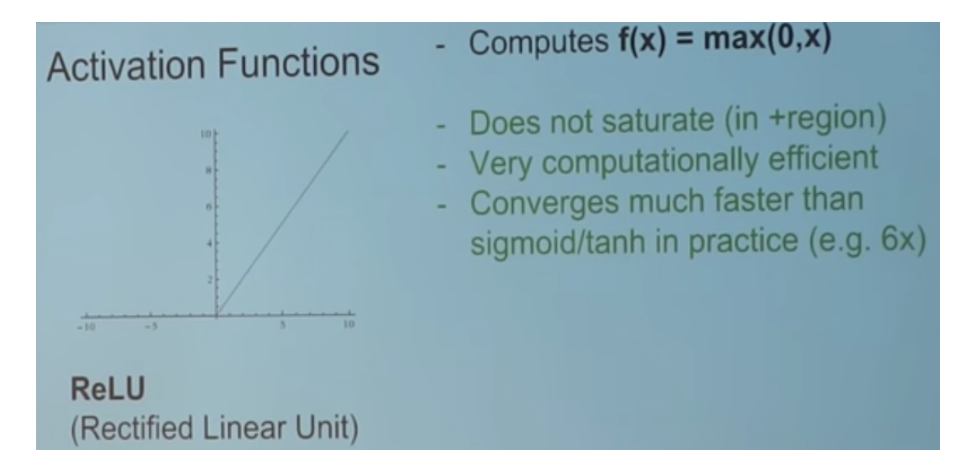
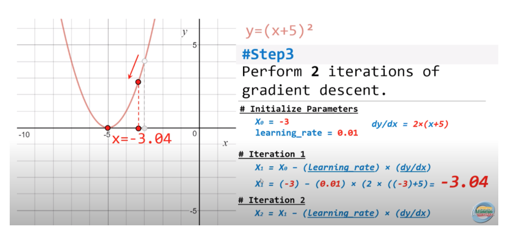
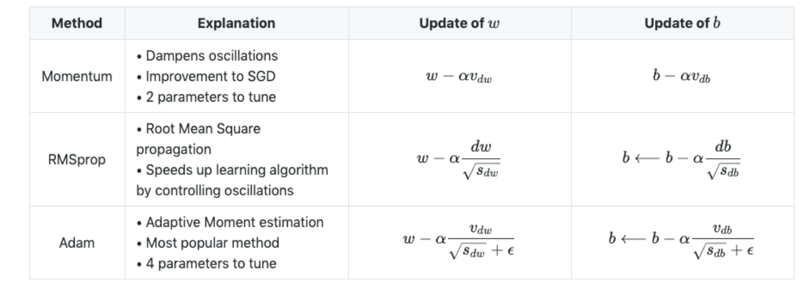

Deep Learning
Feed Forward Neural Networks

Steps
Feed Forward: takes an input and passes it through multiple layers of hidden neurons and outputs a prediction representing the combined input of all the neurons.
Input Layer: consists of the input data which is passed to the first hidden layer in the network. Each layer in the network consists of a series of neurons.
A
Neuronis the weighted sum of the inputs plus bias and then feeds the sum through a non-linear activation function.The outputs of the neurons are then passed to the next layer.
This process is repeated for each layer in the network until the output layer.
Hidden Layers: resides in-between input and output layers and can consist of ‘n’ layers (hyperparameter to tune for).
As the number of hidden layers in the network increases, so does the training time.
Output layer:: produces the class label or target, depending whether this is a classification or regression task.
Goal
The objective is to
minimizethe Loss Function.Where the loss function quantifies how “good” or “bad” a given model is in classifying the input data
Backpropagation:
Back prop is the method to update the weights in the neural network by taking into account the actual output and the desired output.
The backward pass adjusts the weights and biases in the network to optimize the cost function and minimize the loss function.
The derivative with respect to the weights is computed using chain rule.
Activation Functions
Functions used at the end of a hidden unit to introduce non-linear complexities to the model.
Reference: Andrej Karpathy |CS231n Winter 2016: Lectures on Convolutional Neural Nets
Sigmoid Function (Logistic Function)
In order to map predicted values to probabilities, we use the sigmoid function. The function maps any real value into another value between 0 and
In machine learning, we use sigmoid to map predictions to probabilities.
Tanh

Relu

Leaky Relu

Dropout
Is a technique meant to prevent overfitting the training data by dropping out units in a neural network. In practice, neurons are either dropped with probability.
Epoch
Epoch is a term used to refer to one iteration where the model sees the whole training set to update its weights.
Gradient Descent
Gradient descent is an
iterative algorithm, that starts from a random point on a function and travels down its slope in steps until it reaches the lowest point of that function.Gradient Descent involves calculating the
gradientof the target function.Optimization algorithm used to minimize the loss function by iteratively moving in the direction of steepest descent as defined by the negative of the gradient.
Derivative: Slope or curvature of a target function with respect to specific input values to the function.
Gradient: Vector of partial derivatives of a target function with respect to input variables.
Step Size: Learning rate or alpha, a hyperparameter used to control how much to change each input variable with respect to the gradient.
Shape of the loss function:
Linear Models: convex shape
Non-Linear Models: non-convex optimization (needs GPU)

Steps
Calculate gradients of the loss/error function, then updating existing parameters in response to the gradients.
This new gradient tells us the slope of our cost function at our current position and the direction we should move to update our parameters.
The size for updating the weights is controlled by the learning rate.
step size = gradient * learning rate
Calculate the new parameters as:
new params = old params -step size
Repeat until convergence (e.g. gradient is small enough to stop).
Disadvantages
For large datasets, the gradient descent algorithm can be slow.
An alternative is to use a stochastic gradient descent algorithm (SGD) which is faster and more efficient.
Batch Gradient Descent
Same as vanilla gradient descent and computes the gradient of the cost function with respect to the parameters for the entire dataset.
During batch gradient descent, the algorithm has to scan every single instance of the training set before taking a single step, which can take longer to compute, especially for larger datasets.
Batch Gradient Descent is not often used in practice as it’s simply too computationally expensive.
Stochastic Gradient Descent
Stochastic gradient descent (SGD) is the dominant method used to train deep learning models.
While selecting data points at each step to calculate the derivatives, SGD
randomlypicks one data point from the whole data set at each iteration.Often the case, SGD performs much faster than batch gradient descent as moves closer to the minimum quicker.
Given that SGD computes the gradient using a single sample. - single samples are really noisy.
Fluctuation enables it to jump to new and potentially better local minima and converge quicker.
Mini-batch Gradient Descent
Takes the best of both worlds (batch and stochastic) and performs an update for every mini-batch of
ntraining examples.Mini-batches tend to average a little of the noise out relatively to using just SGD.
A good balance is struck when the mini-batch size is small enough to avoid some of the poor local minima, but large enough that it doesn’t avoid the global minima or better-performing local minima.
Stochastic Weighting Average
Stochastic weighting is a technique that allows us to update the weights of the network in a way that is more efficient than the traditional way.
Reference: https://pytorch.org/blog/stochastic-weight-averaging-in-pytorch/
Softmax
In a neural network, the raw predictions are produced from the last layer of the network. The softmax function converts these values to probabilities for multi-class labels.
Learning Rate
Controls how much to change the model in response to the estimated error each time the model weights are updated or can be thought of as the size of the step size taken when performing gradient descent.
High Learning Rate: If the learning rate is set too high, it can cause undesirable divergent behavior in your loss function Large LR puts the model at risk of exceeding the minima so it will not be able to converge: what is known as
EXPLODING GRADIENT.Low Learning Rate: If the LR is set too low, training will progress very slowly as you are making very tiny updates to the weights in your network. A smaller LR will increase the risk of overfitting.

Adaptive Learning Rates
(*) No manual tuning of the learning rate is required;
(*) η is adjusted by the optimizer to perform larger or smaller updates depending on the importance of the weight;
In practice: decay learning rate over time.
Optimizers
Adam: optimization is a stochastic gradient descent method that is based on adaptive estimation of first-order and second-order moments.
Adagrad: is an optimizer with parameter-specific learning rates, which are adapted relative to how frequently a parameter gets updated during training. The more updates a parameter receives, the smaller the updates.
Adadelta: optimization is a stochastic gradient descent method that is based on adaptive learning rate per dimension to address two drawbacks:
The continual decay of learning rates throughout training.
The need for a manually selected global learning rate

Batch Normalization
We normalize the input layer by adjusting and scaling the activations.
This allows each layer of a network to learn by itself a little bit more independently of other layers.
It also allows for a higher learning rate because batch normalization makes sure that there’s no activation that’s gone really high or really low.
It reduces overfitting because it has a slight regularization effect as it adds some noise to each hidden layer’s activations.
It works by normalizing the output of a previous activation layer by subtracting the batch mean and dividing by the batch standard deviation
Therefore, batch normalization adds two trainable parameters to each layer, so the normalized output is multiplied by a “standard deviation” parameter and add a “mean” parameter .
BN usually done after a fully connected/convolutional layer and before a non-linearity layer and aims at allowing higher learning rates and reducing the strong dependence on initialization.
Overfitting
Ways to address overfitting:
Augmentation (e.g. images: flip/scale/rotate)
Decrease batch size
Add dropout rate
Weight decay
Early stopping
Regularization